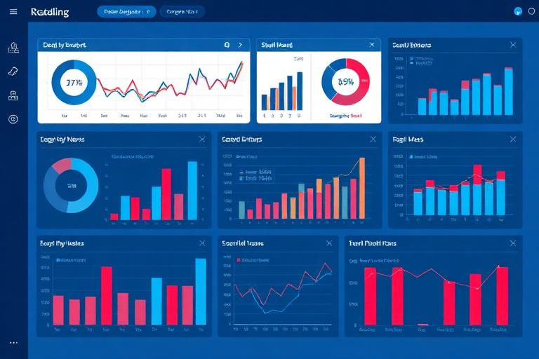
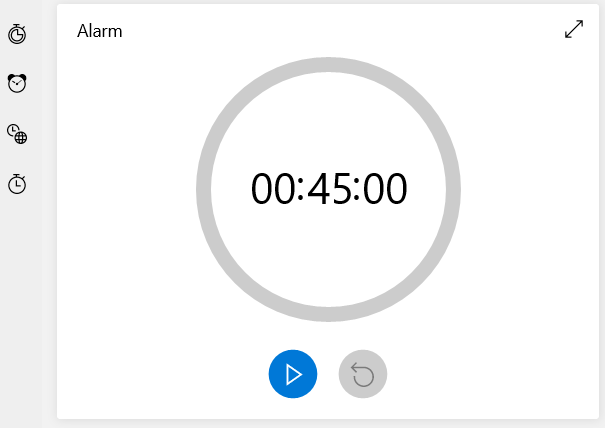

Senior Honors BBA Finance BA Computer Science Math Minor Data Science & AI
Hi, I'm Macy.
I grew up in Truckee, California in the Sierra-Nevada mountains, went to boarding school at The Taft School in Connecticut, and I'm now a senior at the University of San Diego pursuing dual degrees in Finance (BBA) and Computer Science (BA), with a Mathematics minor and a Data Science & AI concentration (graduating Spring 2026).
I'm a creative problem-solver who blends analytics and storytelling. Recently I worked as a BDR Intern at Adobe, analyzing Outreach.io sales sequences across Adobe Express, Document Cloud, Frame.io, and Firefly to surface performance insights and build a Best Practices Playbook for enablement.
As Treasurer for the Society of Women Engineers (SWE), I led a $27K fundraising initiative that enabled 25 women engineers to attend the WE25 National Conference in New Orleans.
- 🏔️ Outdoor lover (run, ski, hike)
- 🧭 Adventurous & curious
- 🎨 Creative & design-minded
- 📊 Data storytelling
- 🤝 Mentorship & tutoring
- 🧠 Systems thinker
Skills
Tools and technologies I work with.
Experience
Where I've worked and what I've built.
- Analyzed 400+ Outreach.io sales sequences across Adobe Express, Document Cloud, Frame.io & Firefly
- Surfaced performance insights by persona, step type, and send timing
- Produced a Best Practices Playbook for BDR enablement
- Led a $27K fundraising initiative to send 25 engineers to the WE25 National Conference in New Orleans
- Managed chapter budget, sponsorships, and financial reporting
- Designed structured math curriculum and progress-tracking worksheets
- Built student confidence through adaptive coaching and feedback loops
- Honors thesis on audio-AI and earnings call sentiment analysis
- Dual degrees, graduating Spring 2026
Projects
Selected work across analytics, product, and finance.

Adobe BDR Sequence Analytics
Outreach.io • Enablement • Playbook
Analyzed 400+ sales sequences across Adobe Express, Document Cloud, Frame.io, and Firefly to identify performance patterns by persona, step, and timing. Produced a Best Practices Playbook for BDRs.
- Message timing & content insights
- Sequence benchmarking & iteration loops
- Executive-ready storytelling & visuals
PitchSuite 2.0 (Senior Design)
Brink SBDC • UI/UX • Docker
Partnered with USD's Brink SBDC to redesign a pitch-management tool with stakeholder-driven requirements, a modern design system, and containerized deployment.
- BRD, user research & flows
- Messaging module & hi-fi prototypes
- Agile collaboration
Microsoft Equity Valuation
DCF • Comps • Research
Built a valuation using DCF and trading comps; articulated drivers, risks, and catalysts in an executive summary. Price target aligned closely with market consensus.
- Financial modeling & synthesis
- Data visualization in Excel
- Concise investment write-up
Ignite Tutoring & Mentorship
Curriculum • Quant Reasoning • Coaching
Designed structured math plans, creative word-problem worksheets, and progress tracking to build student skill and confidence.
Audio-AI Honors Thesis (In Progress)
Earnings Calls • Whisper • Sentiment
Exploring how tone and sentiment in company earnings calls predict stock movement using audio-based AI (e.g., Whisper) and sentiment models.

Clock Widget (Earlier)
Alarm • World Clock • Timer
Multi-feature clock with standard time/date, alarms, world-time, countdown timer, and stopwatch.